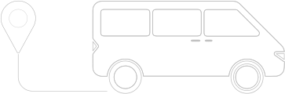
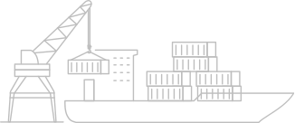

Soluções ambientais e engenharia de ponta para preparar o seu terreno com responsabilidade e eficiência.
Solicite um orçamento


Frota moderna e maquinário pesado para garantir produtividade em qualquer terreno.
Atuação em conformidade com as exigências dos órgãos ambientais e destinação correta dos resíduos.
Profissionais capacitados trabalhando sob rigorosos padrões de segurança no trabalho.
Realizamos a supressão vegetal para diferentes tipos de empreendimentos, preparando o solo para o progresso.

A NR Empreendimentos prepara o solo para obras civis, garantindo agilidade no início do empreendimento com toda a regularização ambiental necessária.

Preparamos grandes áreas para a agricultura e pecuária, desde a limpeza do terreno até o preparo final do solo para o plantio.

Viabilizamos loteamentos urbanos e rurais com serviços de supressão vegetal e terraplanagem em alta escala, dentro dos prazos exigidos.

Atuamos em rodovias, ferrovias, barragens e obras de infraestrutura pública, com capacidade para projetos de grande porte em todo o território nacional.

Preparamos áreas de extração mineral garantindo conformidade com a legislação ambiental e segurança operacional em todas as fases.
Limpeza de áreas e remoção de vegetação com rigor técnico e ambiental.
Ver detalhes →Assessoria completa para licenciamento e regularização do seu projeto.
Ver detalhes →
Destinação ecologicamente correta e reaproveitamento de materiais.
Ver detalhes →
A NR Empreendimentos é a escolha certa para o sucesso do seu projeto
Utilizamos maquinário pesado moderno e eficiente para otimizar os prazos e garantir a execução impecável em qualquer topografia.
Planejamento detalhado para atender com precisão às necessidades únicas de cada empreendimento, do loteamento à grande obra.
Atuação 100% legalizada e responsável, mitigando impactos e destinando corretamente todos os resíduos do processo.
Nossa trajetória é marcada por eficiência, escala e qualidade em cada entrega.
Profissionais qualificados operando maquinário pesado para viabilizar e acelerar a sua obra com absoluta segurança.
A confiança de grandes empresas no compromisso e agilidade da NR Empreendimentos
"A NR Empreendimentos cumpriu prazos rigorosos na supressão vegetal da nossa área e deixou o terreno pronto para o início das obras. Padrão de excelência incrível!"
"Trabalho de excelente qualidade. A NR entregou a área limpa e pronta para o plantio antes mesmo do prazo combinado. Recomendo muito!"
"A supressão vegetal foi executada dentro do prazo e com toda a documentação ambiental em ordem. A equipe da NR é muito profissional e cumpre o que promete!"
"Parceria de longa data com a NR. Sempre entregam com segurança, responsabilidade ambiental e dentro do orçamento previsto."
"A NR Empreendimentos cumpriu prazos rigorosos na supressão vegetal da nossa área e deixou o terreno pronto para o início das obras. Padrão de excelência incrível!"
"Trabalho de excelente qualidade. A NR entregou a área limpa e pronta para o plantio antes mesmo do prazo combinado. Recomendo muito!"
"A supressão vegetal foi executada dentro do prazo e com toda a documentação ambiental em ordem. A equipe da NR é muito profissional e cumpre o que promete!"
"Parceria de longa data com a NR. Sempre entregam com segurança, responsabilidade ambiental e dentro do orçamento previsto."
"Parceria de longa data com a NR. Sempre entregam com segurança, responsabilidade ambiental e dentro do orçamento previsto."
"A supressão vegetal foi executada dentro do prazo e com toda a documentação ambiental em ordem. A equipe da NR é muito profissional e cumpre o que promete!"
"Trabalho de excelente qualidade. A NR entregou a área limpa e pronta para o plantio antes mesmo do prazo combinado. Recomendo muito!"
"A NR Empreendimentos cumpriu prazos rigorosos na supressão vegetal da nossa área e deixou o terreno pronto para o início das obras. Padrão de excelência incrível!"
"Parceria de longa data com a NR. Sempre entregam com segurança, responsabilidade ambiental e dentro do orçamento previsto."
"A supressão vegetal foi executada dentro do prazo e com toda a documentação ambiental em ordem. A equipe da NR é muito profissional e cumpre o que promete!"
"Trabalho de excelente qualidade. A NR entregou a área limpa e pronta para o plantio antes mesmo do prazo combinado. Recomendo muito!"
"A NR Empreendimentos cumpriu prazos rigorosos na supressão vegetal da nossa área e deixou o terreno pronto para o início das obras. Padrão de excelência incrível!"
Resultados visíveis: Confira grandes empreendimentos onde atuamos


Temos a estrutura e o conhecimento técnico necessários para executar a supressão vegetal da sua área de forma legal, rápida e segura.
Fale com um especialistaArtigos, leis ambientais e dicas sobre engenharia e supressão vegetal